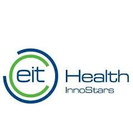

Project Overview
Accelerating XR Innovation in European Healthcare
The VR HEALTH CHAMPIONS project aims to accelerate the market uptake of five "Flagship SMEs" developing innovative Extended Reality (XR) healthcare solutions. By providing these SMEs with essential resources and support, the project addresses market barriers, advances the technological readiness of their innovations, and assists in creating solid business plans for commercialization. The ultimate goal is to help these SMEs reach TRL 9 (actual system proven in an operational environment), navigate regulatory processes like CE marking, and successfully enter the European healthcare market.
Current Status: Kick-off phase
Work Package 7: Value Chain Integration
Work Package 7 (WP7) plays a critical role in coordinating collaborative efforts and ensuring flagship SMEs receive necessary support to achieve market readiness. Led by INN with participation from all project partners, WP7 encompasses the following key tasks:
Key Tasks:
- T7.1: Business & Investment Roadmap: Co-creation of detailed roadmaps for each flagship SME
- T7.2: Challenge Definition for Cascade Funding Scheme: Identifying specific challenges and technical expertise needs
- T7.3: 1st Cascade Funding Scheme: Organization, promotion, and management of open calls
- T7.4: 2nd Cascade Funding Scheme: Focusing on early-stage startups developing VR/AR healthcare solutions
- T7.5: Monitoring & Evaluation: Using CIMIT's HealthTech Innovation Cycle methodology
- T7.6: Final Business & Investment Plans: Supporting flagship SMEs in creating comprehensive plans for wide-scale commercialization
Key Aspects of WP7:
- Collaborative Approach: Emphasizing co-creation and joint implementation with all partners
- Focus on Impact and Sustainability: Guiding flagship SMEs towards market readiness and creating a supportive ecosystem
- Cascade Funding: Expanding project reach and attracting additional expertise
- Monitoring and Evaluation: Incorporating rigorous mechanisms to track progress and assess effectiveness
WP7 is crucial in enabling flagship SMEs to achieve market success and contribute to the advancement of VR/AR healthcare solutions in Europe. It coordinates collaborative efforts, attracts additional expertise, and focuses on long-term impact and sustainability.
The Challenge
The adoption of Extended Reality (XR) technologies in healthcare faces significant barriers, particularly affecting innovative SMEs. Our five Flagship SMEs encounter unique challenges in bringing their XR healthcare solutions to market.
Our Solution
Unique Methodology
- Quadruple Helix Approach: Bringing together academia, industry, government, and civil society for comprehensive innovation
- Interregional Collaboration: Connecting less developed regions with advanced ecosystems to bridge the innovation gap
- CIMIT's HealthTech Innovation Cycle: Monitoring progress across technology, regulatory, marketing/business, and clinical domains
- Cascade Funding: Engaging additional SMEs to expand the XR healthcare ecosystem and provide specialized expertise
Supporting Partners
- INSTITUTO PEDRO NUNES ASSOCIACAO PARA A INOVACA (Portugal): Project coordinator
- Medtronic Portugal, Lda.: Industry experience and market access knowledge
- CENTRO HOSPITALAR E UNIVERSITARIO DE COIMBRA EPE: Clinical expertise, testing facilities, and patient populations
- FONDAZIONE BRUNO KESSLER (Italy): Expertise in digital health and wellbeing
- FUNDACJA KLASTER LIFESCIENCE KRAKOW (Poland): Life sciences cluster, knowledge transfer, networking, and stakeholder engagement
- SIA LIGHTSPACE TECHNOLOGIES (Latvia): VR headset technology, multi-focal displays
- LATVIJAS UNIVERSITATE (Latvia): Expertise in optometry and vision science
- Metaskills sp. z o.o. (Poland): VR training solutions for healthcare professionals
- RTE LAB sp. z o.o. (Poland): UI/UX design for VR applications
- POLITECHNIKA LODZKA (Poland): Technical expertise in computer graphics, software development, and data analysis
- UNIVERSYTET MEDYCZNY W LODZI (Poland): Clinical trials, validation studies, and medical education expertise
- EIT HEALTH INNOSTARS EV: Project dissemination, stakeholder engagement, and network support
- SYREON KUTATO INTEZET KORLATOLT FELELOSSEGU TAR (Hungary): Health technology assessment (HTA) and market access evaluation
- XR4EUROPE: Market analysis, policy recommendations, and dissemination activities for XR technologies
Flagship SMEs
The VR HEALTH CHAMPIONS project supports five innovative SMEs, each developing cutting-edge XR solutions for healthcare. Our goal is to help these companies achieve Technology Readiness Level (TRL) 9, with their products fully developed and proven in operational environments.
MedApp (Poland)
CarnaLife Holo MedNav
A surgical navigation solution using Microsoft HoloLens 2 for 3D visualization of medical data.
Challenges:
- Technical limitations of VR/AR headsets for surgical environments
- Integration challenges with diverse medical devices
- Limited access to large datasets for AI algorithm development
- Complex regulatory and certification processes for medical devices
Our Support:
- Facilitating collaboration with Lightspace for customized surgical VR headsets
- Providing access to partner hospitals for real-world testing
- Offering AI/ML expertise to enhance software functionality
Key Goals:
- Develop a surgical-specific version of HoloLens 2
- Enable active tracking of surgical instruments
- Integrate with various medical devices
- Secure public reimbursement in multiple European countries
Lightspace Optical Reality (Latvia)
Optical Reality AR Headset
A next-generation AR headset designed specifically for medical use cases.
Challenges:
- Ensuring compatibility with existing medical AR/VR software
- Overcoming conservative attitudes among medical professionals
- Navigating the fragmented healthcare market and risk-averse med-tech companies
Our Support:
- Connecting with healthcare opinion leaders to demonstrate value
- Assisting in human factor studies to address safety concerns
- Supporting integration with other medical AR/VR software
Key Goals:
- Advance the headset for AR image-assisted surgery
- Conduct human factor studies for safety analysis
- Increase market awareness and acceptance in the medical community
MEEVA (Italy)
Zentastic VR Games
Therapeutic VR games for rehabilitation of teenagers with neurodevelopmental disorders.
Challenges:
- Shortage of VR developers experienced in medical applications
- Challenges in accessing therapists and patients for testing and validation
- Navigating complex certification processes and reimbursement policies
Our Support:
- Connecting with specialized VR developers through cascade funding
- Facilitating access to therapists and patients for validation
- Providing guidance on regulatory processes and reimbursement
Key Goals:
- Enhance avatar realism through AI integration
- Improve user experience and expand content library
- Develop authoring tools for therapists
- Secure public reimbursement in Italy and other European countries
Metaskills (Poland)
VR Training Engine for Healthcare Soft Skills
A platform for soft skills development in healthcare professionals.
Challenges:
- Limited access to relevant data for enhancing VR character realism
- Difficulty in analyzing commercial potential in the complex healthcare market
Our Support:
- Providing anonymized datasets to improve VR character realism
- Offering market analysis support to assess commercial potential
- Facilitating connections with healthcare professionals for testing
Key Goals:
- Improve avatar realism and responsiveness using AI
- Expand content library and develop authoring tools
- Implement analytics dashboard for skill tracking
- Obtain Class I medical device certification
Virtuleap (Portugal)
Cogniclear VR
A VR-based cognitive assessment tool for detecting early signs of cognitive decline.
Challenges:
- Lack of clear regulatory pathways for obtaining clinical evidence in Europe
- Need for continuous content development to address learning effects
- Difficulties in conducting proof-of-concept studies with clinical partners
Our Support:
- Offering assistance on regulatory processes across European markets
- Supporting development of content to address learning effects
- Facilitating connections for proof-of-concept studies
Key Goals:
- Expand content for comprehensive assessment
- Conduct proof-of-concept studies in multiple European countries
- Secure public reimbursement pathways
- Obtain medical device certification
VR HEALTH CHAMPIONS provides these SMEs with essential support services, including data access, AI/ML enhancement, UI/UX design, regulatory guidance, market uptake strategies, and more. By addressing their unique challenges, we aim to accelerate their growth and foster a thriving XR healthcare ecosystem in Europe.